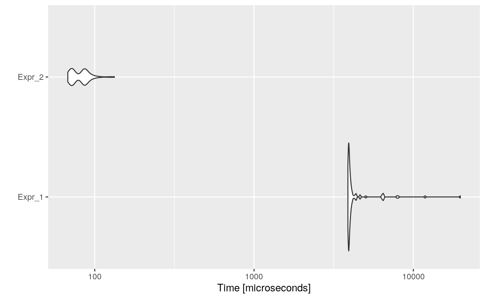

Loop-invariant code consists of statements or expressions which can be moved outside the body of a loop without affecting the semantics of the program. Loop-invariant code motion is a compiler optimization which performs this movement automatically.
For example, consider the following code:
i <- 0
n <- 1000
y <- rnorm(1)
z <- rnorm(1)
a <- c()
while (i < n) {
x <- y + z
a[i] <- 6 * i + x * x
i <- i + 1
}Here, x is assigned a value y + z that is constant in each loop execution. In this example, the assignment would be executed n times. The same result, but much faster, would be obtained by doing the assign outside the loop.
Consider the previous example to be automatically optimized.
code <- paste(
"i <- 0",
"n <- 1000",
"y <- rnorm(1)",
"z <- rnorm(1)",
"a <- c()",
"while (i < n) {",
" x <- y + z",
" a[i] <- 6 * i + x * x",
" i <- i + 1",
"}",
sep = "\n"
)
cat(code)## i <- 0
## n <- 1000
## y <- rnorm(1)
## z <- rnorm(1)
## a <- c()
## while (i < n) {
## x <- y + z
## a[i] <- 6 * i + x * x
## i <- i + 1
## }Then, the automatically optimized code would be:
## i <- 0
## n <- 1000
## y <- rnorm(1)
## z <- rnorm(1)
## a <- c()
## if (i < n) {
## x <- y + z
## }
## while (i < n) {
## a[i] <- 6 * i + x * x
## i <- i + 1
## }And if we measure the execution time of each one, and the speed-up:
bmark_res <- microbenchmark({
eval(parse(text = code))
}, {
eval(parse(text = opt_code))
})
autoplot(bmark_res)
## Min. 1st Qu. Median Mean 3rd Qu. Max.
## Expr_2 54.09199 51.6802 44.8986 50.48898 44.3338 170.5765The opt_loop_invariant optimizer does:
Finds for and while loops in the code.
Discards loops that have function calls inside, as function calls can edit the environment.
Gets which variables are variant inside the loop.
Detects which expressions do not use any variant variable.
Gets these invariant variables, and moves them outside the loop, but inside an if statement (with the same conditional as the loop).
if/else code motion?
Actually, the opt_loop_invariant does not consider if/else expressions to move. In this sense, the code:
Will not be optimized to its equivalent code:
Invariant subexpressions motion?
Actually, the opt_loop_invariant considers only full expressions, it is not working on subexpressions, for instance, the code:
as x and y are invariant, could be optimized to:
Include repeat optimization?
Since determining the conditional that causes a repeat loop to stop is not that simple, it is not easy to remove invariant variables and place them in an if.
For example, the code:
Must be optimized to: